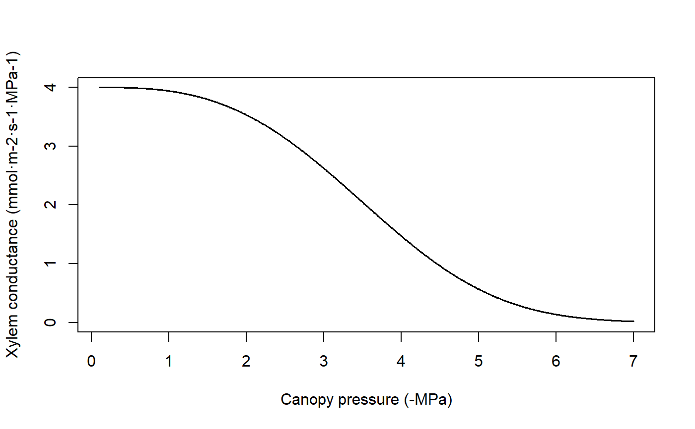

hydraulics_supplyfunctions.RdSet of functions used in the implementation of hydraulic supply functions (Sperry \& Love 2015).
hydraulics_EXylem(psiPlant, psiUpstream, kxylemmax, c, d, allowNegativeFlux = TRUE, psiCav = 0) hydraulics_EVanGenuchten(psiRhizo, psiSoil, krhizomax, n, alpha, l = 0.5) hydraulics_ECapacitance(psi, psiPrev, PLCprev, V, fapo, c, d, pi0, eps,timestep) hydraulics_ECrit(psiUpstream, kxylemmax, c, d, pCrit = 0.001) hydraulics_E2psiXylem(E, psiUpstream, kxylemmax, c, d, psiCav = 0) hydraulics_E2psiVanGenuchten(E, psiSoil, krhizomax, n, alpha, psiStep = -0.0001, psiMax = -10.0) hydraulics_E2psiTwoElements(E, psiSoil, krhizomax, kxylemmax, n, alpha, c, d, psiCav = 0, psiStep = -1e-04, psiMax = -10.0) hydraulics_E2psiBelowground(E, psiSoil, krhizomax, nsoil, alphasoil, krootmax, rootc, rootd, psiIni = as.numeric(c(0)), ntrial = 10, psiTol = 0.0001, ETol = 0.0001) hydraulics_E2psiAboveground(E, psiRootCrown, kstemmax, stemc, stemd, kleafmax, leafc, leafd, PLCstem) hydraulics_E2psiAbovegroundCapacitance(E, psiRootCrown, psiStemPrev, PLCstem, psiLeafPrev, kstemmax, stemc, stemd, kleafmax, leafc, leafd, Vsapwood, stemfapo, stempi0, stemeps, Vleaf, leaffapo, leafpi0, leafeps, tstep) hydraulics_E2psiAbovegroundCapacitanceDisconnected(E, psiStemPrev, PLCstem, RWCsympstemPrev, psiLeafPrev, RWCsympleafPrev, kstemmax, stemc, stemd, kleafmax, leafc, leafd, Vsapwood, stemfapo, stempi0, stemeps, Vleaf, leaffapo, leafpi0, leafeps, klat, tstep = 3600.0) hydraulics_E2psiNetwork(E, psiSoil, krhizomax, nsoil, alphasoil, krootmax, rootc, rootd, kstemmax, stemc, stemd, kleafmax, leafc, leafd, PLCstem, psiIni = as.numeric(c(0)), ntrial = 10, psiTol = 0.0001, ETol = 0.0001) hydraulics_E2psiNetworkCapacitance(E, psiSoil, psiStemPrev, PLCstem, psiLeafPrev, krhizomax, nsoil, alphasoil, krootmax, rootc, rootd, kstemmax, stemc, stemd, kleafmax, leafc, leafd, Vsapwood, stemfapo, stempi0, stemeps, Vleaf, leaffapo, leafpi0, leafeps, tstep = 3600.0, psiIni = as.numeric(c(0)), ntrial = 10, psiTol = 0.0001, ETol = 0.0001) hydraulics_supplyFunctionOneXylem(psiSoil, v, kstemmax, stemc, stemd, psiCav = 0, maxNsteps=200, dE=0.01) hydraulics_supplyFunctionTwoElements(Emax, psiSoil, krhizomax, kxylemmax, n, alpha, c, d, psiCav = 0, dE = 0.1, psiMax = -10.0) hydraulics_supplyFunctionThreeElements(Emax, psiSoil, krhizomax, kxylemmax, kleafmax, n, alpha, stemc, stemd, leafc, leafd, psiCav = 0, dE = 0.1, psiMax = -10.0) hydraulics_supplyFunctionBelowground(psiSoil, krhizomax, nsoil, alphasoil, krootmax, rootc, rootd, minFlow = 0.0, maxNsteps=400, ntrial = 10, psiTol = 0.0001, ETol = 0.0001, pCrit = 0.001) hydraulics_supplyFunctionAboveground(Erootcrown, psiRootCrown, kstemmax, stemc, stemd, kleafmax, leafc, leafd, PLCstem) hydraulics_supplyFunctionAbovegroundCapacitance(Erootcrown, psiRootCrown, psiStemPrev, PLCstemPrev, psiLeafPrev, kstemmax, stemc, stemd, kleafmax, leafc, leafd, Vsapwood, stemfapo, stempi0, stemeps, Vleaf, leaffapo, leafpi0, leafeps, tstep = 3600.0) hydraulics_supplyFunctionNetwork(psiSoil, krhizomax, nsoil, alphasoil, krootmax, rootc, rootd, kstemmax, stemc, stemd, kleafmax, leafc, leafd, PLCstem, minFlow = 0.0, maxNsteps=400, ntrial = 200, psiTol = 0.0001, ETol = 0.0001, pCrit = 0.001) hydraulics_supplyFunctionPlot(x, soil, draw = TRUE, type = "E", speciesNames = FALSE, ylim=NULL) hydraulics_regulatedPsiXylem(E, psiUpstream, kxylemmax, c, d, psiStep = -0.01) hydraulics_regulatedPsiTwoElements(Emax, psiSoil, krhizomax, kxylemmax, n, alpha, c, d, dE = 0.1, psiMax = -10.0)
| v | Proportion of fine roots within each soil layer. |
|---|---|
| krhizomax | Maximum rhizosphere hydraulic conductance (defined as flow per leaf surface unit and per pressure drop). |
| kxylemmax | Maximum xylem hydraulic conductance (defined as flow per leaf surface unit and per pressure drop). |
| kleafmax | Maximum leaf hydraulic conductance (defined as flow per leaf surface unit and per pressure drop). |
| kstemmax | Maximum stem xylem hydraulic conductance (defined as flow per leaf surface unit and per pressure drop). |
| krootmax | Maximum root xylem hydraulic conductance (defined as flow per leaf surface unit and per pressure drop). |
| klat | Lateral hydraulic conductance (defined as flow per leaf surface unit and per pressure drop). |
| E | Flow per surface unit. |
| Emax | Maximum flow per surface unit. |
| Erootcrown | Flow per surface unit at the root crown. |
| psi | Water potential (in MPa). |
| psiPrev | Water potential (in MPa) in the previous time step. |
| psiStemPrev, psiLeafPrev | Stem or leaf water potential (in MPa) in the previous time step. |
| psiUpstream | Water potential upstream (in MPa). In a one-component model corresponds to soil potential. In a two-component model corresponds to the potential inside the roots. |
| psiCav | Minimum water potential (in MPa) experienced (for irreversible cavitation). |
| minFlow | Minimum flow in supply function. |
| psiPlant | Plant water potential (in MPa). |
| psiSoil | Soil water potential (in MPa). A scalar or a vector depending on the function. |
| psiRhizo | Soil water potential (in MPa) in the rhizosphere (root surface). |
| psiRootCrown | Soil water potential (in MPa) at the root crown. |
| psiStep | Water potential precision (in MPa). |
| psiTol | Precision for water potential estimates (in MPa). |
| psiIni | Vector of initial water potential values (in MPa). |
| psiMax | Minimum (maximum in absolute value) water potential to be considered (in MPa). |
| pCrit | Critical water potential (in MPa). |
| PLCstem | Proportion of loss conductance in the stem [0-1]. |
| PLCprev | Previous proportion of loss conductance [0-1]. |
| PLCstemPrev | Previous proportion of loss conductance [0-1] in the stem. |
| RWCsympstemPrev, RWCsympleafPrev | Previous relative water content in the stem or leaf [0-1]. |
| V | Capacity of the compartment per leaf area (in L/m2). |
| Vleaf, Vsapwood | Capacity of the compartment per leaf area (in L/m2) of leaves and sapwood. |
| fapo | Apoplastic fraction (proportion) in the segment. |
| stemfapo, leaffapo | Apoplastic fraction (proportion) in the leaf or stem. |
| pi0 | Full turgor osmotic potential (MPa). |
| stempi0,leafpi0 | Full turgor osmotic potential in the stem or the leaf (MPa). |
| eps | Bulk modulus of elasticity (MPa). |
| stemeps,leafeps | Bulk modulus of elasticity (MPa) in the stem or the leaf. |
| dE | Increment of flow per surface unit. |
| ETol | Precision for water flow per surface unit. |
| c, d | Parameters of the Weibull function (generic xylem vulnerability curve). |
| rootc, rootd | Parameters of the Weibull function for roots (root xylem vulnerability curve). |
| stemc, stemd | Parameters of the Weibull function for stems (stem xylem vulnerability curve). |
| leafc, leafd | Parameters of the Weibull function for leaves (leaf vulnerability curve). |
| n, alpha, l | Parameters of the Van Genuchten function (rhizosphere vulnerability curve). |
| nsoil, alphasoil | Parameter vectors of the Van Genuchten function (rhizosphere vulnerability curve) with one value for each soil layer. |
| allowNegativeFlux | A boolean to indicate wether negative flux (i.e. from plant to soil) is allowed. |
| maxNsteps | Maximum number of steps in the construction of supply functions. |
| ntrial | Maximum number of steps in Newton-Raphson optimization. |
| x | An object of class |
| soil | A list containing the description of the soil (see |
| type | Plot type for |
| draw | A flag to indicate whether the supply function should be drawn or just returned. |
| speciesNames | A flag to indicate the use of species names instead of cohort names in plots. |
| ylim | Graphical parameter to override function defaults. |
| tstep, timestep | Time step in seconds. |
Details of the hydraulic model are given in a vignette. Function hydraulics_supplyFunctionPlot draws a plot of the supply function for the given soil object and network properties of each plant cohort in x. Function hydraulics_vulnerabilityCurvePlot draws a plot of the vulnerability curves for the given soil object and network properties of each plant cohort in x.
Values returned for each function are:
hydraulics_E2psiXylem: The plant (leaf) water potential (in MPa) corresponding to the input flow, according to the xylem supply function and given an upstream (soil or root) water potential.
hydraulics_E2psiVanGenuchten: The root water potential (in MPa) corresponding to the input flow, according to the rhizosphere supply function and given a soil water potential.
hydraulics_E2psiTwoElements: The plant (leaf) water potential (in MPa) corresponding to the input flow, according to the rhizosphere and plant supply functions and given an input soil water potential.
hydraulics_E2psiNetwork: The rhizosphere, root crown and plant (leaf water potential (in MPa) corresponding to the input flow, according to the vulnerability curves of rhizosphere, root and stem elements in a network.
hydraulics_Ecrit: The critical flow according to the xylem supply function and given an input soil water potential.
hydraulics_EVanGenuchten: The flow (integral of the vulnerability curve) according to the rhizosphere supply function and given an input drop in water potential (soil and rhizosphere).
hydraulics_EXylem: The flow (integral of the vulnerability curve) according to the xylem supply function and given an input drop in water potential (rhizosphere and plant).
hydraulics_supplyFunctionOneXylem, hydraulics_supplyFunctionTwoElements and
hydraulics_supplyFunctionNetwork: A list with different numeric vectors with information of the two-element supply function:
E: Flow values (supply values).
FittedE: Fitted flow values (for hydraulics_supplyFunctionTwoElements).
Elayers: Flow values across the roots of each soil layer (only for hydraulics_supplyFunctionNetwork).
PsiRhizo: Water potential values at the root surface (only for hydraulics_supplyFunctionNetwork).
PsiRoot: Water potential values inside the root crown (not for hydraulics_supplyFunctionOneXylem).
PsiPlant: Water potential values at the canopy (leaf).
dEdP: Derivatives of the supply function.
hydraulics_supplyFunctionPlot: If draw = FALSE a list with the result of calling hydraulics_supplyFunctionNetwork for each cohort.
hydraulics_regulatedPsiXylem: Plant water potential after regulation (one-element loss function) given an input water potential.
hydraulics_regulatedPsiTwoElements: Plant water potential after regulation (two-element loss function) given an input soil water potential.
Sperry, J. S., F. R. Adler, G. S. Campbell, and J. P. Comstock. 1998. Limitation of plant water use by rhizosphere and xylem conductance: results from a model. Plant, Cell \& Environment 21:347–359.
Sperry, J. S., and D. M. Love. 2015. What plant hydraulics can tell us about responses to climate-change droughts. New Phytologist 207:14–27.
kstemmax = 4 # in mmol·m-2·s-1·MPa-1 stemc = 3 stemd = -4 # in MPa psiVec = seq(-0.1, -7.0, by =-0.01) #Vulnerability curve kstem = unlist(lapply(psiVec, hydraulics_xylemConductance, kstemmax, stemc, stemd)) plot(-psiVec, kstem, type="l",ylab="Xylem conductance (mmol·m-2·s-1·MPa-1)", xlab="Canopy pressure (-MPa)", lwd=1.5,ylim=c(0,kstemmax))